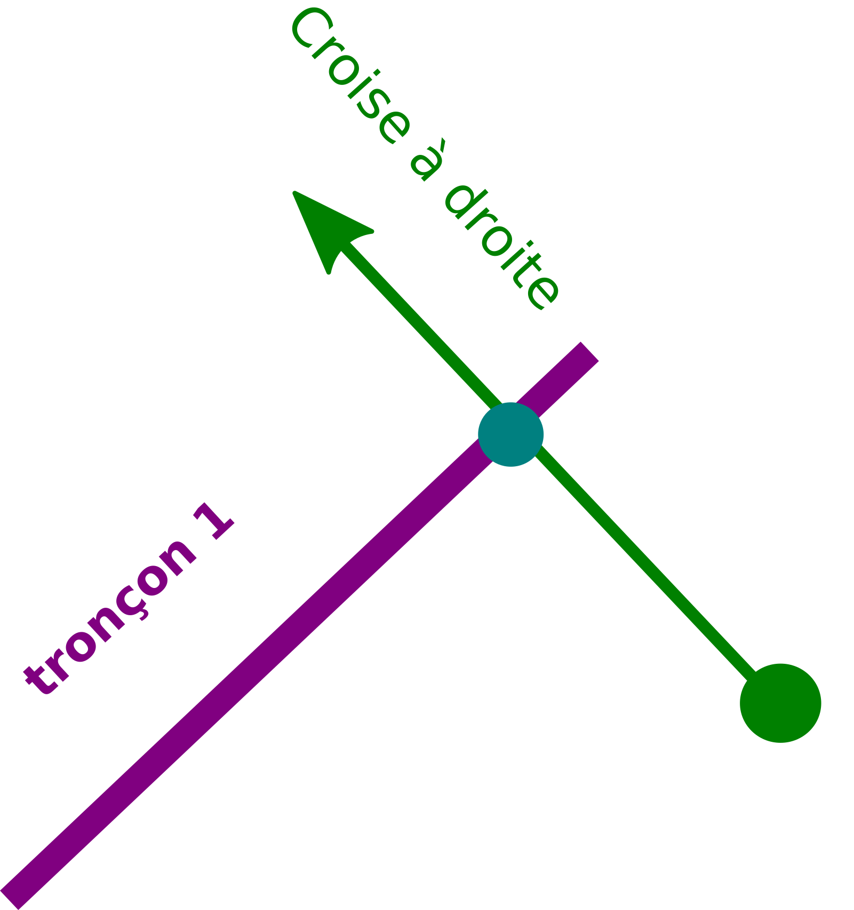

II- Rapprochement adresse BDtopo IGN
Afin de faciliter le travail d’intervention des secours, le pôle SIg à répondu à une demande de rapprochement des adresses BAL dont dispose le Département avec les tronçons de voies IGN.
L’objectif étant de déterminer pour chaque tronçon de BDtopo : * Le nom de la voie * Le premier numéro à droite * Le premier numéro à gauche * Le dernier numéro à droite * Le dernier numéro à gauche

1- Rapprochement des voies adresses avec les tronçons routes
Cette première étape vise à associer pour chaque voie tracée et enregistrée par les communes dans la base de données adresse du Département un tronçon BDtopo IGN.
Pour cela nous faisons appel à la fonction adresse.id_voie_bdtopo_sdis() qui se trouve ici : fonction sql
1.1 Segmenter les tronçons Bdtopo
Dans un premier temps, la fonction crée une table temporaire des nœuds de BDtopo que l’on va pouvoir indexer pour accélérer le traitement :
1 - Sélection des périmètres communes bdtopo correspondant aux périmètres des communes adresses publiées (pour circonscrire les tronçons sur les bons périmètres)
with commune_pub as ( select st_buffer(bc.geom, 100) as geom from adresse.v_communes_publiees a, ign.bdtopo_commune bc -- buffer de 100 mètres des communes ign du au décalage ign osm where a.insee_code = bc.insee_com ), troncon_com_pub as (--- selection des tronçon sur les communes bdtopo sléctionnées plus haut select b.* from ign.bdtopo_troncon_de_route b, commune_pub where st_intersects(b.geom,commune_pub.geom) )2 - Création de noeuds bdtopo : segmentation des tronçons tous les 10 mètres, transformation des segments en multipoints, dump pour avoir des géométries uniques.
select ROW_NUMBER() OVER() as id_pt, c.id, (ST_Dump(ST_AsMultiPoint(st_segmentize(ST_Force2D(c.geom) ,10))::geometry(MULTIPOINT,2154))).geom as geom --- création de noeuds multipoints bdtopo à partir de la segmentisation des tronçons(3D) from troncon_com_pub c; CREATE INDEX node_bd_topo_geom --- création d'un indexe sur la geom de la table ON node_bd_topo USING gist (geom) TABLESPACE pg_default;

1.2 Segmenter les tronçons Bdtopo
Dans un second temps on rapproche les tronçons dont la majorité des noeuds se trouve sur une voie adresse.
1 - Buffer des voies adresses
with commune_pub as ( ------ selection des communes bd_topo correspondant aux communes publiées adresse select st_buffer(bc.geom, 100) as geom from adresse.v_communes_publiees a, ign.bdtopo_commune bc -- buffer de 100 mètres des communes ign du au décalage ign osm where a.insee_code = bc.insee_com ), voie as ( ------ selection des voies adresses bufferisées sur les communes publiées adresse select v.id_voie, ST_Buffer(ST_Buffer(v.geom, 10, 'endcap=flat join=round'), -5, 'endcap=flat join=round') as geom -- on aura besoin du buffer pour collecter les noeuds (on créé un buffer de 10 mètres et on raccourci les bords de 5 mètres) from adresse.voie v, commune_pub a where st_intersects(a.geom,v.geom) ),2 - Compter le nombre de noeuds par tronçon de route
pt_count_troncon as (------ Compte le nombre de noeuds par tronçon select id, count(id_pt) as ct from node_bd_topo group by id),4 - Rapprocher les noeuds bdtopo qui intersectent le buffer des voies adresses
f as (------ rapprochement des id_voies et des noeuds à l'intérieur du buffer des voies précédemment créé select b.id_pt, b.id, voie.id_voie from node_bd_topo b inner join voie ON ST_Within(b.geom, voie.geom) ),5 - Compter le nombre de noeuds bdtopo par voie adresse
l as ( ------ Compte le nombre de noeud pour chaque id_voie select f.id, f.id_voie, count(f.id_voie) as ct from f group by f.id, f.id_voie ),6 - Rapprochement des tronçons à une voie adresse si la majorité de ses nœuds est comprise dans son buffer
troncon_node as ( ------ Séléctionne les id_tronçon dont la majorité des noeuds intersecte le buffer des voies select distinct on (l.id) l.id, l.id_voie, l.ct from l , pt_count_troncon where pt_count_troncon.id = l.id and (pt_count_troncon.ct/l.ct)<= 2 -- division du total des noeuds tronçon/le nombre de noeuds pour un même id_voie, si moins de 2, on conserve l'id-tronçon et l'id_voie associé order by l.id, l.ct DESC) select troncon_node.id, troncon_node.id_voie, k.geom ------ Rapprochement des géométrie de la bd_topo grâce à l'id tronçon des noeuds précédemment sélectionnés from troncon_node, ign.bdtopo_troncon_de_route k where k.id = troncon_node.id ;

2- Raprochement des adresses
Cette seconde étape vise à associer pour chaque tronçon, les points adresses dépendant de la voie qui lui a été attribué.
Pour cela nous créons une vue matérialisée adresse.vm_sdis_pts_adresse_bdtopo dont le code se trouve ici : vm sql
2.1 Projeter les points adresses sur les tronçons
On projete le point sur le tronçon le plus prohce associé à la voie dont dépend le point adresse.
1 - Projection des points adresse sur les tronçon ayant le même id_voie
with bdtopo_idvoie as ( select * from adresse.id_voie_bdtopo_sdis() --- Fonction donnant la séléction des id_tronçons bdtopo et des id_voies adresse ), distance_troncon as ( select p.id_point, troncon.id_troncon, troncon.id_voie, troncon.geom, p.numero, p.suffixe, p.geom as geom_pt_adresse, ST_LineInterpolatePoint(ST_LineMerge(troncon.geom), ST_LineLocatePoint(ST_AsEWKT(ST_LineMerge(troncon.geom)), ST_AsEWKT(p.geom))) as geom_pt_proj, --- Projection des points adresses sur les tronçon ayant le même id_voie st_distance(troncon.geom, p.geom) as dist --- distance entre le point et la voie FROM bdtopo_idvoie troncon inner join adresse.point_adresse p on troncon.id_voie = p.id_voie inner join adresse.v_communes_publiees l on st_intersects(p.geom,l.geom) ),2 - Sélection unique des id_points avec id tronçon associés dont la distance est la plus courte : pour une voie comprenant plusieurs tronçons bdtopo on associe les points adresses aux tronçon le plus proche)
point_proj as( --- select distinct on (distance_troncon.id_point) distance_troncon.id_point, distance_troncon.id_troncon, distance_troncon.id_voie, -- selection distinct d'id_point adresse distance_troncon.numero, distance_troncon.suffixe, distance_troncon.geom, geom_pt_adresse, geom_pt_proj from distance_troncon order by id_point, dist ASC --- ordonner de la plus petite distance à la plus grande pour que distinct sélectionne la première entité avec la plus courte distance ),

2.2 Determiner de quels côtés se trouve les points adresse
Pour identifier le côté du point adresse par rapport au tronçon.
1 - Tracer une ligne prolongée entre le point adresse et son point projeté sur le tronçon
line_cross as ( --- select point_proj.id_point, point_proj.id_troncon, point_proj.id_voie, point_proj.numero, point_proj.suffixe, point_proj.geom, geom_pt_adresse, geom_pt_proj, ST_MakeLine(geom_pt_adresse, ST_TRANSLATE(geom_pt_adresse, sin(ST_AZIMUTH(geom_pt_adresse,geom_pt_proj)) * (ST_DISTANCE(geom_pt_adresse,geom_pt_proj) + (ST_DISTANCE(geom_pt_adresse,geom_pt_proj) * (50/49))), cos(ST_AZIMUTH(geom_pt_adresse,geom_pt_proj)) * (ST_DISTANCE(geom_pt_adresse,geom_pt_proj) + (ST_DISTANCE(geom_pt_adresse,geom_pt_proj) * (50/49))))) as geom_segment from point_proj ),2 - Definir le coté de du point adresse par rapport au tronçon grâce au sens de croisement du segment précédemment créé
point_cote as (--- select line_cross.id_point, line_cross.id_troncon, line_cross.id_voie, line_cross.numero, line_cross.suffixe, case WHEN ST_LineCrossingDirection(geom_segment, ST_LineMerge(geom)) = -1 then 'gauche' WHEN ST_LineCrossingDirection(geom_segment, ST_LineMerge(geom) ) = 1 then 'droite' WHEN ST_LineCrossingDirection(geom_segment, ST_LineMerge(geom) ) = 0 then 'indefini' --- Si croise ni à gauche ni à droite ELSE 'probleme' end as cote_voie, --- croise plusieurs fois, donc problème de tracé du tronçon ou cas particulier (rare) geom_segment, geom_pt_adresse, geom_pt_proj from line_cross ),
{kind=link}
2.3 Ne conserver que les premiers et derniers points adresse
Pour identifier le côté du point adresse par rapport au tronçon.
1 - Sélection des tronçons sur les communes dont l’adressage est certifié/publié sur La BAN
commune_publ as ( ------ selection des communes bd_topo correspondant aux communes publiées adresse select bc.geom from adresse.v_communes_publiees a, ign.bdtopo_commune bc where a.insee_code = bc.insee_com ), troncon_com_pub as ( --- selection des tronçon sur les communes bdtopo sléctionnées plus haut select b.* from ign.bdtopo_troncon_de_route b, commune_publ where st_intersects(b.geom,commune_publ.geom) ),2 - Sélection des points adresses droite/gauches les plus proches du point de fin et départ du tronçon
point_pair_first as ( ------ selection du point adresse par tronçon à droite le plus proche point de départ du tronçon select distinct on (a.id_troncon) a.id_point, a.id_troncon, a.id_voie, a.numero, a.suffixe, a.cote_voie, a.geom_pt_adresse as geom_pt, st_distance(ST_StartPoint(st_linemerge(tc.geom)), a.geom_pt_proj) as dist from point_cote a, troncon_com_pub tc where cote_voie = 'droite' and a.id_troncon = tc.id order by a.id_troncon, dist ASC --- ordonner de la plus petite distance à la plus grande pour que distinct sélectionne la première entité avec la plus courte distance ), point_pair_der as ( ------ selection du point adresse par tronçon à droite et le plus proche du point de fin du tronçon select distinct on (b.id_troncon) b.id_point, b.id_troncon, b.id_voie, b.numero, b.suffixe, b.cote_voie, b.geom_pt_adresse as geom_pt, st_distance(ST_EndPoint(st_linemerge(tc.geom)), b.geom_pt_proj) as dist from point_cote b, troncon_com_pub tc where cote_voie = 'droite' and b.id_troncon = tc.id order by b.id_troncon, dist ASC ), point_impair_first as (------ selection du points adresse par tronçon à gauche et le plus proche du point de départ du tronçon select distinct on (c.id_troncon) c.id_point, c.id_troncon, c.id_voie, c.numero, c.suffixe, c.cote_voie, c.geom_pt_adresse as geom_pt, st_distance(ST_StartPoint(st_linemerge(tc.geom)), c.geom_pt_proj) as dist from point_cote c, troncon_com_pub tc where cote_voie = 'gauche' and c.id_troncon = tc.id order by c.id_troncon, dist ASC ), point_impair_der as (------ selection du point adresse par tronçon à gauche et le plus proche du point de fin du tronçon select distinct on (d.id_troncon) d.id_point, d.id_troncon, d.id_voie, d.numero, d.suffixe, d.cote_voie, d.geom_pt_adresse as geom_pt, st_distance(ST_EndPoint(st_linemerge(tc.geom)), d.geom_pt_proj) as dist from point_cote d, troncon_com_pub tc where cote_voie = 'gauche' and d.id_troncon = tc.id order by d.id_troncon, dist ASC)3 - Jointure des précédentes sélections : tronçons rapprochés (z), geométrie tronçon ign (e) et nom complet des voies (v)
Select z.id_troncon, z.id_voie, v.nom_complet, ------ J CONCAT(point_pair_first.numero,' ', point_pair_first.suffixe) as prem_num_droite, CONCAT(point_pair_der.numero, ' ', point_pair_der.suffixe) as der_num_droite, CONCAT(point_impair_first.numero, ' ', point_impair_first.suffixe) as prem_num_gauche, CONCAT(point_impair_der.numero, ' ', point_impair_der.suffixe) as der_num_gauche, e.geom as geom_tronçon from point_cote z left join point_pair_first on z.id_troncon = point_pair_first.id_troncon left join point_pair_der on z.id_troncon = point_pair_der.id_troncon left join point_impair_first on z.id_troncon = point_impair_first.id_troncon left join point_impair_der on z.id_troncon = point_impair_der.id_troncon left join troncon_com_pub e on z.id_troncon = e.id left join adresse.voie v on v.id_voie = z.id_voie group by z.id_troncon, z.id_voie, point_pair_first.numero, point_pair_der.numero, point_impair_first.numero, point_impair_der.numero, point_pair_first.suffixe, point_pair_der.suffixe, point_impair_first.suffixe, point_impair_der.suffixe, e.geom, v.nom_complet ;

3- Liste des points adresse indeterminés
On identifie ici les points adresse dont le côté n’a pu être determiné : mauvais tracé d’un tronçon, positionnement particulier du point adresse par rapport au tronçon (à l’extrémité d’un tronçon).
Pour cela nous créons une vue materialisée *adresse.vm_sdis_pts_adresse_indetermine * dont le code se trouve ici : vm sql
with bdtopo_idvoie as (--- Fonction donnant la séléction des id_tronçons bdtopo et des id_voies adresse select * from adresse.id_voie_bdtopo_sdis() ), commune_pub as (------ selection des communes bd_topo correspondant aux communes publiées adresse select st_buffer(bc.geom, 100) as geom from adresse.v_communes_publiees a, ign.bdtopo_commune bc where a.insee_code = bc.insee_com ), troncon_com_pub as (--- selection des tronçon sur les communes bdtopo sléctionnées plus haut select b.* from ign.bdtopo_troncon_de_route b, commune_pub where st_intersects(b.geom,commune_pub.geom) ) select p.id, p.geom --- selection des tronçon qui n'ont pas d'id_voie associé from troncon_com_pub p left join bdtopo_idvoie a on p.id = a.id_troncon group by p.id, p.geom, a.id_voie having a.id_voie is null
4- Voies adresses non affiliées à un tronçon
On identifie ici les voies adresses pour lesquelles aucun tronçon n’a pu être rapproché : pas de tronçon superposé, une trop petite partie du tronçon superposée.
Pour cela nous créons une vue materialisée adresse.vm_troncon_no_voie_bd_topo dont le code se trouve ici : vm sql
with bdtopo_idvoie as (--- Fonction donnant la séléction des id_tronçons bdtopo et des id_voies adresse select * from adresse.id_voie_bdtopo_sdis() ), distance_troncon as (--- Projection des points adresses sur les tronçon ayant le même id_voie et de la distance entre le point et la voie select p.id_point, troncon.id_troncon, troncon.id_voie, troncon.geom, p.numero, p.suffixe, p.geom as geom_pt_adresse, ST_LineInterpolatePoint(ST_LineMerge(troncon.geom), ST_LineLocatePoint(ST_AsEWKT(ST_LineMerge(troncon.geom)), ST_AsEWKT(p.geom))) as geom_pt_proj, st_distance(troncon.geom, p.geom) as dist FROM bdtopo_idvoie troncon inner join adresse.point_adresse p on troncon.id_voie = p.id_voie inner join adresse.v_communes_publiees l on st_intersects(p.geom,l.geom) ), point_proj as (--- Séléction des unique des id_points avec id tronçon associés dont la distance est la plus courte (une voie pouvant comprendre plusieurs tronçons bdtopo on associe les points adresses aux tronçon le plus proche) select distinct on (distance_troncon.id_point) distance_troncon.id_point, distance_troncon.id_troncon, distance_troncon.id_voie, distance_troncon.numero, distance_troncon.suffixe, distance_troncon.geom, geom_pt_adresse, geom_pt_proj from distance_troncon order by id_point, dist ASC), line_cross as ( --- tracer une ligne prolongées entre le point adresse et son point projeté sur le tronçon select point_proj.id_point, point_proj.id_troncon, point_proj.id_voie, point_proj.numero, point_proj.suffixe, point_proj.geom, geom_pt_adresse, geom_pt_proj, ST_MakeLine(geom_pt_adresse, ST_TRANSLATE(geom_pt_adresse, sin(ST_AZIMUTH(geom_pt_adresse,geom_pt_proj)) * (ST_DISTANCE(geom_pt_adresse,geom_pt_proj) + (ST_DISTANCE(geom_pt_adresse,geom_pt_proj) * (50/49))), cos(ST_AZIMUTH(geom_pt_adresse,geom_pt_proj)) * (ST_DISTANCE(geom_pt_adresse,geom_pt_proj) + (ST_DISTANCE(geom_pt_adresse,geom_pt_proj) * (50/49))))) as geom_segment from point_proj ), point_cote as (--- Definir le coté de du point adresse par rapport au tronçon grâce à son sens de croisement du segment précédemment crée select line_cross.id_point, line_cross.id_troncon, line_cross.id_voie, line_cross.numero, line_cross.suffixe, case WHEN ST_LineCrossingDirection(geom_segment, ST_LineMerge(geom)) = -1 then 'gauche' WHEN ST_LineCrossingDirection(geom_segment, ST_LineMerge(geom) ) = 1 then 'droite' WHEN ST_LineCrossingDirection(geom_segment, ST_LineMerge(geom) ) = 0 then 'indefini' ELSE 'probleme' end as cote_voie, geom_segment, geom_pt_adresse, geom_pt_proj from line_cross) select * from point_cote where cote_voie = 'indefini' or cote_voie ='probleme' ; --- Sélection des points adresses indéfinis ou à problème par rapport au tronçon de rattachement